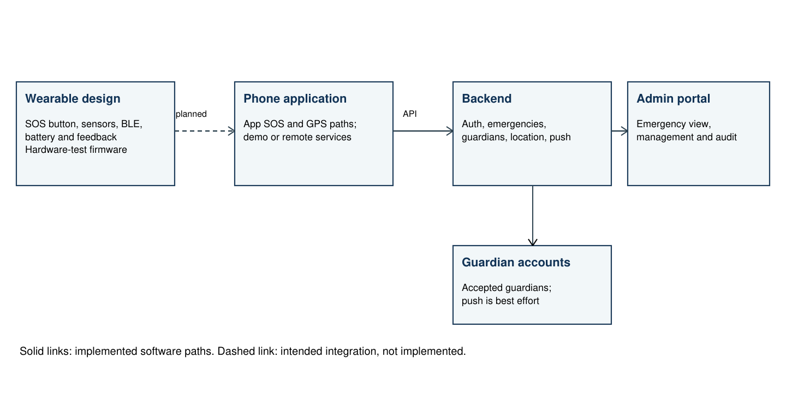

Smart Safety Tag — draft for inventor and institutional review
This document follows the supplied invention disclosure questionnaire. It describes the current project and identifies proposed work. Inventorship, contributions, disclosure history and patentability require confirmation; this is not a filed patent application.
Working title: Smart Safety Tag: A Wearable-Assisted Personal Safety System
Smart Safety Tag is a combination of a mobile application, backend services, an administrative interface, and a wearable electronics design. The intended purpose is to help a person initiate an emergency alert and make relevant information available to trusted contacts. The system uses the phone for network access and, where permitted and available, location. The wearable is intended to provide a discreet physical button and local feedback.
The project contains an in-app SOS workflow and backend emergency records. In configured remote mode the app can send an application-button alert, with a phone location when available. The server stores the emergency and can attempt notification to the owner and accepted guardians. An admin portal can display emergency information. A separate KiCad package describes a wearable tag and charging adapter. The existing firmware is a peripheral-test application; the wearable-to-phone emergency path has not yet been implemented or physically demonstrated.

Figure 1. Project architecture. The dashed link is planned; the solid links describe implemented software paths.
The project combines familiar safety-app and wearable-device building blocks. Its particular engineering choices include a separate protected charging adapter, phone-supplied connectivity, guardian acceptance, recorded emergency transitions and a hardware design with motion, audio and feedback peripherals. These choices should be reviewed against existing products and patent literature before any feature is described as novel.
These are features of the project, not a claim that any individual feature or combination is new. The wearable emergency connection and keyword processing remain proposed work.
The intended problem is that a person in distress may have limited time to navigate a phone and communicate their location. A wearable input coupled to a phone and trusted contacts could provide another way to start a response. The current software can demonstrate an app-originated alert; it does not yet demonstrate the wearable-originated flow. A published application, US20240412619A1, already describes a Bluetooth wearable button working with a phone and contacts. A specific technical distinction, if any, needs a detailed prior-art and claims review.
Possible applications include personal safety for people travelling alone, campus communities and groups caring for an individual who wishes to share an alert with trusted contacts. A shared dashboard could help an authorized organization review incidents. These are prospective uses. The repository does not establish user demand, reduced response times or improved safety outcomes.
Figure 1 illustrates the system boundaries. The repository contains editable KiCad schematics and layouts, fabrication files, assembly drawings, firmware source and app code. Those files are design material rather than photographs of a tested wearable. Add photographs and measured results only after a physical prototype is assembled and evaluated.
| Evidence | Recorded result | Interpretation |
|---|---|---|
| Mobile unit suite | 24 tests passed | Local software tests; includes mocked behavior. |
| Selected backend checks | 10 tests passed | Isolated tests use in-memory repositories and mock notification providers. An authentication-based test timed out after 15 seconds. |
| Admin TypeScript check | Passed | Static type check, not a deployed-system trial. |
| CAD verification register | Both PCBs report zero DRC violations, unconnected items and schematic parity findings. | Four ERC diagnostic categories remain ignored by default; assembly and physical testing remain pending. |
| Firmware build record | ESP-IDF v5.5 build; application image 582,816 bytes. | Recorded compilation only; the image has not been flashed to a physical board. |
| Power and thermal model | Calculated scenarios and modeled temperature window. | Neither battery runtime nor charging thresholds have been measured. |
The project bring-up procedure lists planned tests for charging, electrical loads, radio, sensors, feedback, battery runtime and enclosure fit. Actual conditions, measurements and failures should be added when those tests are performed.
To be completed by the team: list publications, posters, presentations, public repositories, demonstrations, discussions outside confidentiality arrangements, dates, and any patent applications. Their status cannot be determined from this repository.
Possible users include individuals, families, educational institutions and organizations supporting a consenting group of users. Potential applications include personal alerts and authorized incident monitoring. No customer interviews, pricing study, deployment data, commercial interest or market-size estimate has been established in the project evidence.
Search date: 29 October 2026. Broad search terms included “wearable personal safety device Bluetooth smartphone emergency location guardian alert” and “wearable safety device GSM GPS”. Representative sources include:
This targeted preliminary search is not exhaustive and is not a novelty opinion, claim chart or freedom-to-operate analysis. A patent professional should review the actual invention, publication dates and relevant jurisdictions.
The following names are carried over provisionally at the request of the project team. Their roles and inventorship for this project must be confirmed; publication authorship and legal inventorship are separate determinations.
| Name | Affiliation / ID | Specific contribution to this invention |
|---|---|---|
| Bala Rakesh Gundapaneni | To confirm | To confirm |
| Abdul Basith Syed | To confirm | To confirm |
| Jagadeeshbabu Borru | To confirm | To confirm |
| Naga Sravanthi Puppala | To confirm | To confirm |
Sign only after the named contributors, inventorship and contents have been reviewed and confirmed.
| Name | Signature | Date |
|---|---|---|
| ________________________ | ________________________ | ____________ |
| ________________________ | ________________________ | ____________ |
| ________________________ | ________________________ | ____________ |
| ________________________ | ________________________ | ____________ |